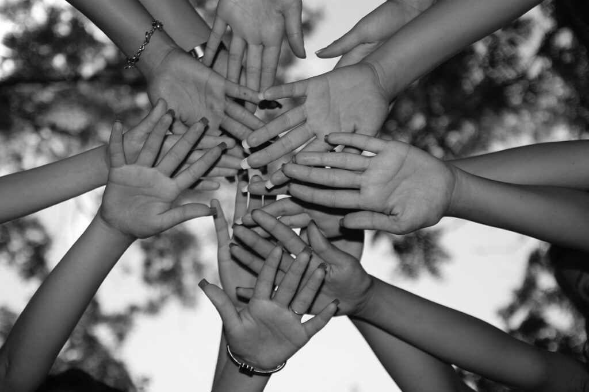

Quem somos?
Somos uma Organização sem fim lucrativos, que atua no atedimento a população geral em situação de necessidade
Seja um Voluntário
Fale conosco
Endereço:Rua do Pixel, 58, Bairro Jardim das Artes, São Paulo — SP, 01420-001 Brasil
Telefone: (16) 98764 9200
email: maosquecuidam@voluntario.org.br